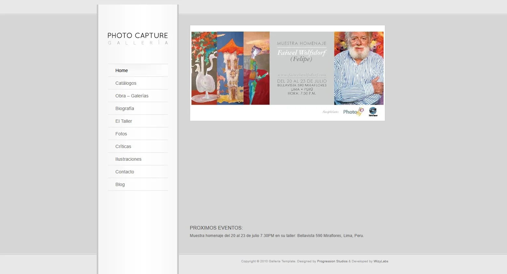
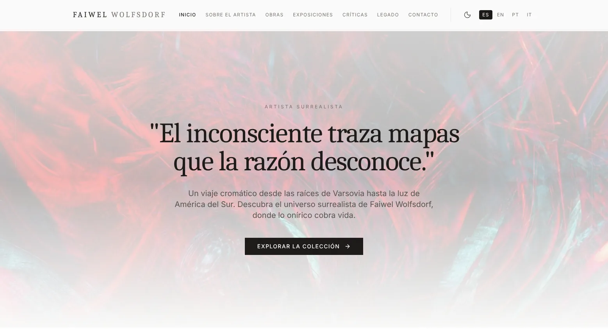

De una web del 2010 al presente con tecnologías que nos sumergen en el mundo surrealista del artista
El rediseño le dio a la web de Faiwel Wolfsdorf una entrada con su propia voz y reunió toda su obra en un solo lugar.


Antes AhoraDeslizá para comparar la portada anterior con la actual.
Un nuevo comienzo para su obra
El sitio anterior estaba hecho en WordPress. Cumplió su función durante años, pero ya era momento de modernizar y conseguir que se conociera más al artista.
- 01
Su nombre al frente
"Faiwel Wolfsdorf" encabeza cada página. Quien llega sabe desde el primer segundo de quién es la obra.
- 02
Una portada que perdura
La home presenta su pensamiento con una frase propia. No depende de fechas ni hay que actualizarla.
- 03
Toda la obra en un recorrido
Siete secciones con nombres claros y la galería organizada en 11 series, para encontrar cada obra con facilidad.
- 04
Tecnología actual
Se adapta a celulares y tablets, carga sólo lo que se mira y se puede leer en cuatro idiomas.
Primero su pensamiento, después su presencia
La home recibe al visitante con una frase del artista que sintetiza su pensamiento y lo introduce de golpe en su mundo surrealista.
La frase
"El inconsciente traza mapas que la razón desconoce." Ocupa toda la pantalla, sobre un fondo de pintura.
La presencia
Al deslizar de forma intuitiva aparece Faiwel junto a su obra. Imagen y texto entran con movimientos suaves.
Su voz
Una segunda cita cierra el recorrido: "Crear es liberar". Recién ahí la página invita a explorar la colección.
"El inconsciente traza mapas que la razón desconoce."
Sus raíces están en Varsovia, su vida en Sudamérica y parte de su obra en Italia. El sitio se puede leer completo en español, inglés, portugués e italiano.
Un diseño que se corre para que hable la obra
Cada decisión parte de la misma idea: el color lo pone Faiwel. El sitio funciona como las paredes de una galería.
Tonos piedra
Una paleta neutra, como papel y paredes blancas, para que las pinturas sean lo único con color.
Tipografía con serif
Títulos con aire de catálogo de arte y textos en una letra limpia y fácil de leer.
Movimiento suave
Imágenes y textos aparecen al deslizar, sin saltos. Acompañan la lectura en vez de distraer.
Siete secciones claras
Inicio, Sobre el artista, Obras, Exposiciones, Críticas, Legado y Contacto. Más un modo oscuro, como una sala con la luz baja.
Toda la obra, ordenada en un solo lugar
Toda la obra quedó en una sola galería, organizada por series. También se sumó un archivo de documentos y la sección Legado, con los alumnos de su taller.
Hecho con React, Vite, Tailwind CSS, Framer Motion e i18next. Publicado en Vercel.
Recorré el sitio de Faiwel
La frase, su presencia, su obra completa y su legado.
¿Tu web también quedó en el tiempo?
La modernizo con un diseño que cuente quién sos.